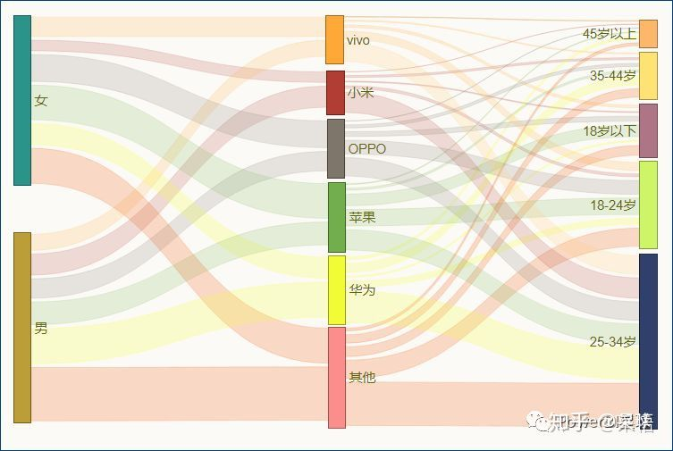
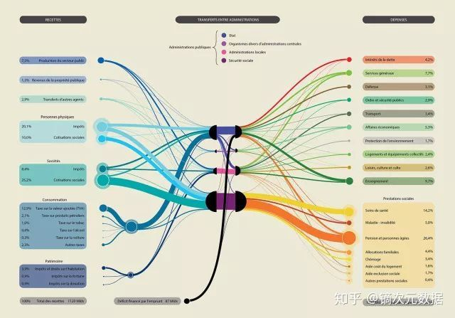

4.2. 桑基图¶
如果一定要给桑基图贴一个标签的话，那一定是：展现数据流动的利器。
桑基图（Sankey diagram），即桑基能量分流图，也叫桑基能量平衡图。它是一种特定类型的流程图，图中延伸的分支的宽度对应数据流量的大小，通常应用于能源、材料成分、金融等数据的可视化分析。因1898年Matthew Henry Phineas Riall Sankey绘制的“蒸汽机的能源效率图”而闻名，此后便以其名字命名为“桑基图”。
桑基图最明显的特征就是，始末端的分支宽度总和相等，即所有主支宽度的总和应与所有分出去的分支宽度的总和相等，保持能量的平衡。

各手机品牌与年龄、性别的关系¶

法国公共管理部门收支情况来源图。这张桑基图(Sankey Diagram)厘清了法国公共管理部门的资金来源，以及他们是如何分配这些资金的。最左边的支点代表了不同的资金来源，包括社会、个人税收等。这些资金在汇总到法国的四大公共管理部门后，被再分配到交通、环境保护、住房、教育、文化等各个领域。¶